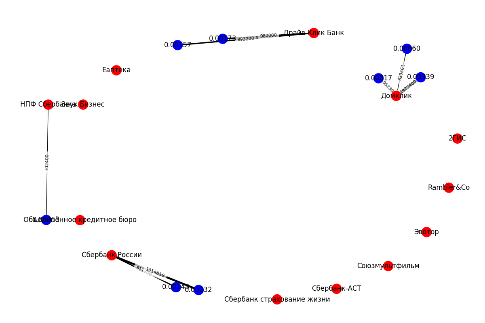

Описание решения
Этот документ предаствляет собой описание решения тестового задания
Введение
Описание проекта
Проект выполняет сбор, анализ и визуализацию данных о закупках организаций с долей участия Сбербанка. Он включает веб-скрапинг, обработку данных и создание графиков для отображения взаимосвязей между организациями и их закупками.
Постановка задачи
Задание должно быть выполнено только средствами Python (pandas, numpy, sklearn, matplotlib, networkx)
Часть 1 (обязательная)
1.1. Собрать из открытых источников ИНН организаций, доля владения Сбера в которых больше 0% с информацией об уставном капитале
1.2 С сайта zakupki.gov.ru собрать описание закупок (планы) услуг за январь 2021 и провести анализ:
1.2.1 Рассчитать долю закупок для ИНН из п. 1.1
1.2.2 Построить граф по всем ИНН (Атрибут ребра - сумма закупок. При построении графа сделать зависимость толщины ребра от значения суммы. Допустимо добавление своих атрибутов ребра)
Часть 2 (желательная - для раскрытия навыков)
2.1 Для графа из п. 1.4 построить автокластеризацию по атрибутам ребер (можно использовать свои). Визуализировать кластеры
Часть 3 (дополнительная, если останется время) 3.1 разработать алгоритм поиска аномалий в признаках графа
Обзор Решения
Общая концепция
Общая идея решения включает в себя несколько частей:
- Поиск информации
- Построение модели
- Кластеризация данных
1. Поиск информации
Для поиска компаний использовались открытые источники данных. Помимо поиска информации на веб-ресурсах, я сделал обращение в СБЕР для получения данных о компаниях в котроых доля владений СБЕРА более 0% но на момент написания этого документа (14.06.24) обращение не было рассмотренно.
В итоге для упращения поиска информации о компаниях которыми владеет СБЕР я использовал страницу: https://ru.wikipedia.org/wiki/Категория:Дочерние_компании_Сбербанка
Таким образом я получил названия компаний, далее необходимо было найти ИНН этих компаний. Для этого я использовал сервис: https://www.prima-inform.ru/search/
Затем я проверил эти ИНН на наличие закупок в январе 2021 и собрал информацию о закупках на сервисе: https://zakupki.gov.ru/epz/order/extendedsearch/results.html
2. Построение модели
Модель представляет собой двудольный остовный граф:
- Красная вершина - ИНН организации
- Синяя вершина - Доля конкретной закупки от всех закупок всех компаний за январь 2021-го в процентах
- Ребро - Стоимость закупки в рублях
Таким образом для каждой организации граф будет выглядеть так:
В итоге для всех найденных компаний будет построен аналогичный граф.
3. Кластеризация
В этом проекте используется кластеризация методом K-Means для группировки организаций на основе статистики их долей закупок. Идея заключается в том, чтобы найти естественные кластеры организаций, которые имеют схожие характеристики по доле закупок.
Вот основные шаги кластеризации в этом проекте: Создается data frame, содержащий статистические данные о долях закупок (min, max, std, median) для каждой организации.
Применяется метод главных компонент (PCA) для уменьшения размерности данных с 4 до 2 компонент. Это делается для возможности визуализации результатов на двумерном графике.
Выполняется кластеризация методом K-Means на основе 4 признаков: min, max, std, median долей закупок.
Сначала был произведен визульный анализ для первичного определния кол-ва кластеров. К сожалению, мне не удалось найти большую выборку данных, поэтому дать репрезентативное представление кластеров не представлилось возможным, но тем не менее этот метод работает на любой выборке. И представленный метод я бы также использовал и для больших выборок. Так, при визуальном анализе я определил 3 кластера, после чего и указал это количство для использования метода K-Means для группировки организаций на основе статистики их долей закупок
Поиск ИНН
Для посика ИНН я сделал следующее:
-
Спарсил (с помощью BeautifulSoup) названия компаний со страницы: https://ru.wikipedia.org/wiki/Категория:Дочерние_компании_Сбербанка
-
Затем с помощью сервиса: https://www.prima-inform.ru/search нашел ИНН найденных ранее компаний. К сожалению, не у всех компаний удалось найти ИНН.
В итоге получил такой data frame:
name inn
0 2ГИС 5405276278
1 Домклик 7736249247
2 Драйв Клик Банк 6452010742
3 Еаптека 7704865540
4 Звук Бизнес 7801445445
5 НПФ Сбербанка 7725352740
6 Объединённое кредитное бюро 7710561081
7 Сбербанк России 7702770003
8 Сбербанк страхование жизни 7744002123
9 Сбербанк-АСТ 7707308480
10 Союзмультфильм 7731393568
11 Эвотор 9715260691
12 Rambler&Co 7714247574
Код описанной выше логики:
def get_sber_companies():
url = "https://ru.wikipedia.org/wiki/Категория:Дочерние_компании_Сбербанка"
response = requests.get(url)
soup = BeautifulSoup(response.content, "html.parser")
category_groups = soup.find_all("div", class_="mw-category-group")
companies = []
for category_group in category_groups:
category_companies = category_group.find("ul")
companies_from_group = category_companies.find_all("li")
for company in companies_from_group:
company_link = company.find("a")
if company_link:
company_name = company_link.text
# INN search
search_inn = f"https://www.prima-inform.ru/search/?query={company_name}"
headers = {
"User-Agent": "Mozilla/5.0 (Windows NT 10.0; Win64; x64) AppleWebKit/537.36 (KHTML, like Gecko) Chrome/58.0.3029.110 Safari/537.3"
}
search_inn_response = requests.get(search_inn, headers=headers)
search_inn_soup = BeautifulSoup(search_inn_response.content, "html.parser")
inn = None
try:
inn = search_inn_soup.find("span", class_="result_list_table__req").text.split("\n")[0].split(": ")[1]
except:
continue
companies.append({"name": company_name, "inn": inn})
return companies
# Obtaining data and creating a DataFrame
companies = get_sber_companies()
df = pd.DataFrame(companies)
print (df)
Поиск закупок
Далее необходимо было по найденным ИНН найти закупки за январь 2021-го года.
Для этого я сделал следующее:
- Нашел общую сумму всех закупок в рублях (тут речь идет о всех закупках. В том числе и тех, которые не относятся к СБЕРу и не относятся к компаниям связанным со СБЕРом)
Общая сумма всех закупок представленна ниже:
Все закупки: 56769073602
-
Используя ИНН найденные на этапе Поиск ИНН, я нашел закупки компаний (которыми владеет СБЕР) за январь 2021-го года.
-
Таким образом для каждой компании я получил следующий data frame:
inn - ИНН компании, которой владеет СБЕР.
cost - Сумма всех закупок конкретной компании за январь 2021-го.
share - Доля закупок компании от вех закупок всех компаний в процентах. (сумма закопуок компании/сумма всех закупок * 100).
cost_details - массив закупок (в рублях) конкретной компании
share_details - массив долей каждой закупки от всех закупок. (i-ый элемент из массива share_details соотсветсвует i-му элементу из cost_details)
inn cost share cost_details share_details
0 5405276278 0 0.000000 [] []
1 7736249247 2357191 0.004152 [1922400, 339561, 95230] [0.0033863508386232904, 0.0005981443389064519,...
2 6452010742 1873200 0.003300 [980000, 893200] [0.0017262920421612694, 0.001573391889855557]
3 7704865540 0 0.000000 [] []
4 7801445445 0 0.000000 [] []
5 7725352740 302400 0.000533 [302400] [0.0005326844015811918]
6 7710561081 0 0.000000 [] []
7 7702770003 2126019 0.003745 [811200, 1314819] [0.001428947045511451, 0.0023160832414106515]
8 7744002123 0 0.000000 [] []
9 7707308480 0 0.000000 [] []
10 7731393568 0 0.000000 [] []
11 9715260691 0 0.000000 [] []
12 7714247574 0 0.000000 [] []
Код описанной выше логики:
## 1.2 Collection of procurement data from zakupki.gov.ru website and analysis
# Function for obtaining procurement data from the website zakupki.gov.ru
def get_procurements_data():
currency_rates = {
"$": 89,
"€": 95,
"₽": 1
}
url = "https://zakupki.gov.ru/epz/order/extendedsearch/results.html?searchString=&morphology=on&search-filter=%D0%94%D0%B0%D1%82%D0%B5+%D0%BE%D0%B1%D0%BD%D0%BE%D0%B2%D0%BB%D0%B5%D0%BD%D0%B8%D1%8F&pageNumber=1&sortDirection=false&recordsPerPage=_100&showLotsInfoHidden=false&savedSearchSettingsIdHidden=&sortBy=UPDATE_DATE&fz44=on&fz223=on&af=on&ca=on&pc=on&placingWayList=&selectedLaws=&priceFromGeneral=&priceFromGWS=&priceFromUnitGWS=&priceToGeneral=&priceToGWS=&priceToUnitGWS=¤cyIdGeneral=-1&publishDateFrom=01.01.2021&publishDateTo=31.01.2021&applSubmissionCloseDateFrom=&applSubmissionCloseDateTo=&customerIdOrg=&customerFz94id=&customerTitle=&okpd2Ids=&okpd2IdsCodes="
headers = {
"User-Agent": "Mozilla/5.0 (Windows NT 10.0; Win64; x64) AppleWebKit/537.36 (KHTML, like Gecko) Chrome/58.0.3029.110 Safari/537.3"
}
response = requests.get(url, headers=headers)
soup = BeautifulSoup(response.content, "html.parser")
pages=soup.find_all("li",class_="page")[-1].text.replace("\n","")
result=0
for i in range(int(pages)):
url = f"https://zakupki.gov.ru/epz/order/extendedsearch/results.html?searchString=&morphology=on&search-filter=%D0%94%D0%B0%D1%82%D0%B5+%D0%BE%D0%B1%D0%BD%D0%BE%D0%B2%D0%BB%D0%B5%D0%BD%D0%B8%D1%8F&pageNumber={i + 1}&sortDirection=false&recordsPerPage=_100&showLotsInfoHidden=false&savedSearchSettingsIdHidden=&sortBy=UPDATE_DATE&fz44=on&fz223=on&af=on&ca=on&pc=on&placingWayList=&selectedLaws=&priceFromGeneral=&priceFromGWS=&priceFromUnitGWS=&priceToGeneral=&priceToGWS=&priceToUnitGWS=¤cyIdGeneral=-1&publishDateFrom=01.01.2021&publishDateTo=31.01.2021&applSubmissionCloseDateFrom=&applSubmissionCloseDateTo=&customerIdOrg=&customerFz94id=&customerTitle=&okpd2Ids=&okpd2IdsCodes="
response = requests.get(url, headers=headers)
soup = BeautifulSoup(response.content, "html.parser")
costs=soup.find_all("div",class_="price-block__value")
for cost in costs:
cost_text = cost.text.strip()
cost_value = int(re.sub(r'[^\d]+', '', re.sub(r'[, ]', '', cost_text)))//100
currency = re.search(r'[^0-9\s,]$', cost_text).group()
if currency in currency_rates:
cost_value = cost_value * currency_rates[currency]
result += cost_value
else:
print(f"Неизвестная валюта: {currency}")
print("Все закупки:" + str(result))
procurements = []
for inn in df['inn']:
result_for_one_company=0
url = f"https://zakupki.gov.ru/epz/order/extendedsearch/results.html?searchString={inn}&morphology=on&search-filter=%D0%94%D0%B0%D1%82%D0%B5+%D0%BE%D0%B1%D0%BD%D0%BE%D0%B2%D0%BB%D0%B5%D0%BD%D0%B8%D1%8F&pageNumber=1&sortDirection=false&recordsPerPage=_100&showLotsInfoHidden=false&savedSearchSettingsIdHidden=&sortBy=UPDATE_DATE&fz44=on&fz223=on&af=on&ca=on&pc=on&placingWayList=&selectedLaws=&priceFromGeneral=&priceFromGWS=&priceFromUnitGWS=&priceToGeneral=&priceToGWS=&priceToUnitGWS=¤cyIdGeneral=-1&publishDateFrom=01.01.2021&publishDateTo=31.01.2021&applSubmissionCloseDateFrom=&applSubmissionCloseDateTo=&customerIdOrg=&customerFz94id=&customerTitle=&okpd2Ids=&okpd2IdsCodes="
response = requests.get(url, headers=headers)
soup = BeautifulSoup(response.content, "html.parser")
costs = soup.find_all("div", class_="price-block__value")
cost_details=[]
share_details=[]
for cost in costs:
cost_text = cost.text.strip()
cost_value = int(re.sub(r'[^\d]+', '', re.sub(r'[, ]', '', cost_text))) // 100
currency = re.search(r'[^0-9\s,]$', cost_text).group()
if currency in currency_rates:
cost_value = cost_value * currency_rates[currency]
result_for_one_company += cost_value
cost_details.append(cost_value)
share_details.append(cost_value/result*100)
share=result_for_one_company/result*100
procurements.append({"inn": inn, "cost": result_for_one_company, "share":share,"cost_details":cost_details, "share_details":share_details})
return procurements
# Obtaining procurement data for January 2021
procurements_data = get_procurements_data()
procurements_df = pd.DataFrame(procurements_data)
print(procurements_df)
Построение графа
Для построения графа я обьеденил data frame из Поиск закупок и data frame из Поиск ИНН.
Таким образом data frame для построения графа выглядел так:
name inn cost share cost_details share_details
0 2ГИС 5405276278 0 0.000000 [] []
1 Домклик 7736249247 2357191 0.004152 [1922400, 339561, 95230] [0.0033863508386232904, 0.0005981443389064519,...
2 Драйв Клик Банк 6452010742 1873200 0.003300 [980000, 893200] [0.0017262920421612694, 0.001573391889855557]
3 Еаптека 7704865540 0 0.000000 [] []
4 Звук Бизнес 7801445445 0 0.000000 [] []
5 НПФ Сбербанка 7725352740 302400 0.000533 [302400] [0.0005326844015811918]
6 Объединённое кредитное бюро 7710561081 0 0.000000 [] []
7 Сбербанк России 7702770003 2126019 0.003745 [811200, 1314819] [0.001428947045511451, 0.0023160832414106515]
8 Сбербанк страхование жизни 7744002123 0 0.000000 [] []
9 Сбербанк-АСТ 7707308480 0 0.000000 [] []
10 Союзмультфильм 7731393568 0 0.000000 [] []
11 Эвотор 9715260691 0 0.000000 [] []
12 Rambler&Co 7714247574 0 0.000000 [] []
Затем, я построил следующий граф: 
Это двудольный остовный граф, где:
- Красная вершина - Название организации
- Синяя вершина - Доля конкретной закупки от всех закупок всех компаний за январь 2021-го года в процентах
- Ребро - Стоимость закупки в рублях
Толщина ребра прямо пропорциональна сумме закупки компании.
На графе видно, что 4 компании из 13-ти имеют закупки в январе 2021-го года. Также видно суммы и доли закупок.
Код описанной выше логики:
### 1.2.1 Calculation of the share of purchases for TINs from 1.1.1
# Consolidation of company and procurement data
merged_df = pd.merge(df, procurements_df, on='inn', how='left')
print(merged_df[['name', 'inn', 'cost', 'share', 'cost_details','share_details']])
### 1.2.2 Construction of the graph by all TINs
# Graph creation
G = nx.Graph()
# Adding vertices and edges
for _, row in merged_df.iterrows():
inn = row['inn']
cost_details = row['cost_details']
share_details = row['share_details']
# Adding a vertex for an organization
org_node = f"{row['name']} ({inn})"
G.add_node(org_node, node_color='red', label=row['name'])
# Adding vertices and edges for purchases
for cost, share in zip(cost_details, share_details):
# cost_node = str(cost)
share_node = f"{share:.5f}"
# G.add_node(cost_node, node_label=share_node)
G.add_node(share_node, node_color='blue', label=share_node)
G.add_edge(org_node, share_node, weight=cost)
# Graph visualization
pos = nx.kamada_kawai_layout(G)
edge_weights = nx.get_edge_attributes(G, 'weight')
max_weight = max(edge_weights.values())
normalized_weights = {edge: weight / max_weight for edge, weight in edge_weights.items()}
node_colors = nx.get_node_attributes(G, 'node_color')
node_labels = nx.get_node_attributes(G, 'label')
default_node_color = 'lightblue'
fig, ax = plt.subplots(figsize=(12, 8))
nx.draw(G, pos, with_labels=True, labels=node_labels, node_color=[node_colors.get(node, default_node_color) for node in G.nodes()], edge_color="gray", ax=ax)
nx.draw_networkx_edges(G, pos, width=[normalized_weights[edge] * 5 for edge in G.edges()], ax=ax)
nx.draw_networkx_edge_labels(G, pos, edge_labels=edge_weights, font_size=8, bbox=dict(facecolor='white', edgecolor='none', alpha=0.7), ax=ax)
plt.tight_layout()
plt.show()
Кластеризация
Для кластеризации данных необходимо было:
- Решить какие данные кластризировать.
- Собрать и обработать данные.
- Визуализировать данные.
Для кластеризации я решил создать 4-х мерный вектор с репрезентативной статистичекой информацией о долях закупок найденных компаний.
Я выбрал 4 признака кластеризации:
- min - минимальная доля закупок компании
- max - максимальная доля закупок компании
- std - стандартное оклонение закупок компании
- median - медиана долей закупок компании
Эти данные я собрал и получил следующий data frame:
name inn min max std median
0 2ГИС 5405276278 NaN NaN NaN NaN
1 Домклик 7736249247 0.000168 0.003386 0.001427 0.000598
2 Драйв Клик Банк 6452010742 0.001573 0.001726 0.000076 0.001650
3 Еаптека 7704865540 NaN NaN NaN NaN
4 Звук Бизнес 7801445445 NaN NaN NaN NaN
5 НПФ Сбербанка 7725352740 0.000533 0.000533 0.000000 0.000533
6 Объединённое кредитное бюро 7710561081 NaN NaN NaN NaN
7 Сбербанк России 7702770003 0.001429 0.002316 0.000444 0.001873
8 Сбербанк страхование жизни 7744002123 NaN NaN NaN NaN
9 Сбербанк-АСТ 7707308480 NaN NaN NaN NaN
10 Союзмультфильм 7731393568 NaN NaN NaN NaN
11 Эвотор 9715260691 NaN NaN NaN NaN
12 Rambler&Co 7714247574 NaN NaN NaN NaN
Далее, на основе представленного data frame, я использовал метод K-Means для кластеризации представленных векторов (без inn и name).
Для этого я применил метод главных компонент PCA для сжатия 4-мерного вектора до 2-мерного, чтобы визуализировать его в 2-мерном пространстве. Затем я визуализировал полученные данные после сжатия:
Так как есть всего 4е компании с ненулевыми закупками мы получили 5 компонент (4-компании с ненулевыми закупками и 5 - компании с нулевыми закупками).
Выборка маленькая, не репрезентативнаия, но достаточна для визуализации работы моего решения. Далее я выделяю клстеры для найденных компонент.
Я выделил три кластера обозначенных ниже:
Для большей выборки это было-бы репрезентативнее, но как есть
Таким образом, я использую метод кластеризации K-Means в качестве кол-ва кластеров указываю параметр 3.
Таким образом, я получаю итоговую кластеризацию, где каждый кластер выделен своим цветом:
Мои комментарии к Решению.
Я понимаю, что на практике не строят кластеры для 5-ти элементов. Понимаю, что выборка маленькая и это слабая часть моего решения. Но тем не менее, считаю, что решение демонстрирует рабочие подходы и методы.
Код описанной выше логики:
# # Part 2 (desirable - to unlock skills)
#
# ## 2.1 Autoclustering of graph by attributes of edges and visualization of clusters
#
# Creating a new DataFrame with share_details statistics
statistic_df = merged_df[['name', 'inn']].copy()
statistic_df['min'] = merged_df['share_details'].apply(lambda x: np.min(x) if len(x) > 0 else np.nan)
statistic_df['max'] = merged_df['share_details'].apply(lambda x: np.max(x) if len(x) > 0 else np.nan)
statistic_df['std'] = merged_df['share_details'].apply(lambda x: np.std(x) if len(x) > 0 else np.nan)
statistic_df['median'] = merged_df['share_details'].apply(lambda x: np.median(x) if len(x) > 0 else np.nan)
print(statistic_df)
# Apply PCA to reduce dimensions to 2
reduced_df = statistic_df.drop(["name","inn"],axis=1)
# Encode NaN values with zeros
reduced_df.fillna(0, inplace=True)
# Perform K-Means clustering
# n_clusters - were determined in advance, after which 3 centers were specified
kmeans = KMeans(n_clusters=3, random_state=42)
reduced_df['Cluster'] = kmeans.fit_predict(reduced_df)
pca = PCA(n_components=2)
pca_result = pca.fit_transform(reduced_df.iloc[:, :-1])
reduced_df['PCA1'] = pca_result[:, 0]
reduced_df['PCA2'] = pca_result[:, 1]
# Plot the PCA result
plt.figure(figsize=(10, 6))
plt.scatter(reduced_df['PCA1'], reduced_df['PCA2'], c=reduced_df['Cluster'], cmap='viridis', marker='o')
plt.xlabel('PCA1')
plt.ylabel('PCA2')
plt.title('PCA of Clusters from 4 Features')
plt.show()